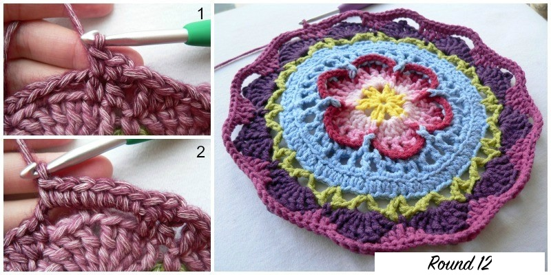
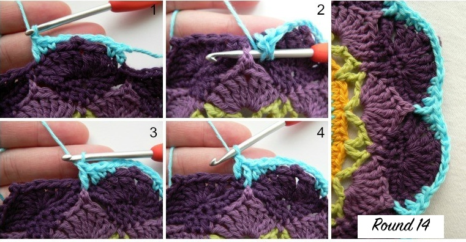
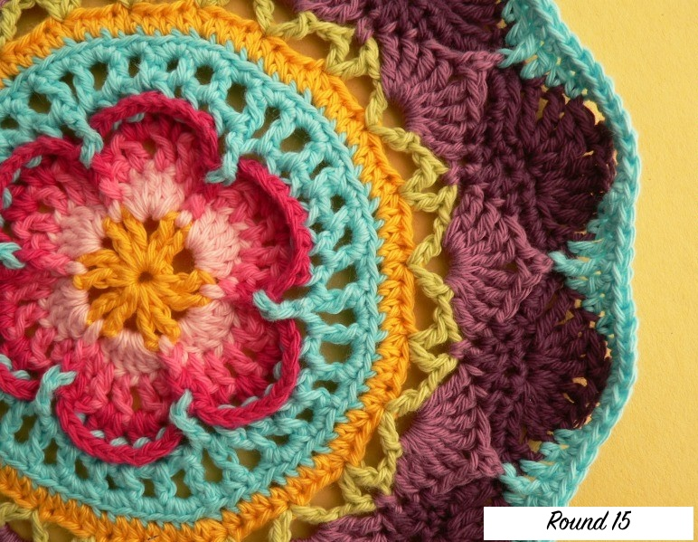
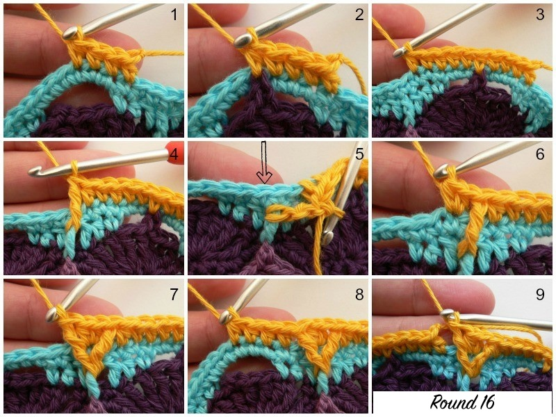
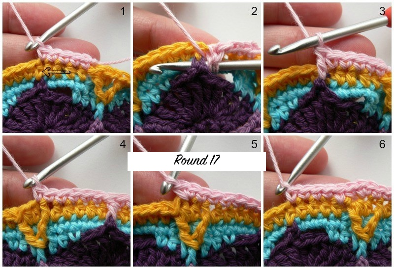
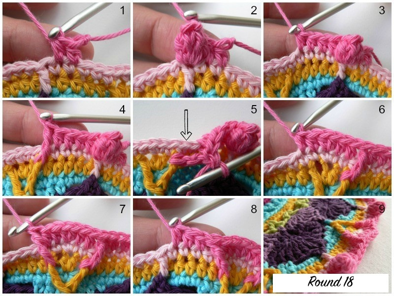
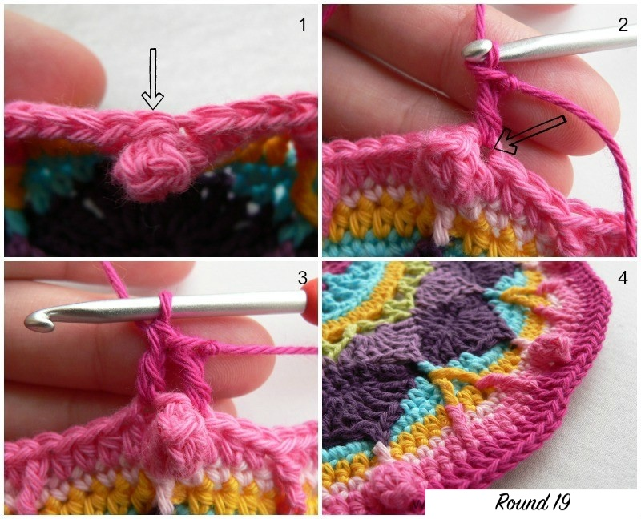

Round 11
Optional: if you would like to give the petals more definition, feel free to work into the BLO in this round.
Join your new yarn by making a standing half-double crochet in the first tr of any petal around. After making your first hdc, sc in the next tr of the petal. Ch 6. Sc in the seventh tr of the petal and hdc in the last tr. Dc in the sc between petals.
Repeat:
*Hdc in the first tr of the next petal and sc in the next tr. Ch 6. Sc in the seventh tr of the petal and hdc in the last tr. Dc in the sc between petals.*
Repeat from * to * 10 more times. Join to the standing hdc with a sl st.
Stitch Count: 12 dc’s, 24 hdc’s, 24 sc’s, and 12 ch-6 spaces.

Round 12
If using the same colour: ch 1, sc in same st, then sc in next st.
If using a new colour: start with a standing sc in same st, then sc in next st.
Repeat:
*Make 6 sc’s in the ch-6 space behind the petal. Sc in the next 5 st’s.*
Repeat 10 more times. Then 6 sc in last ch-6 space and sc in last 3 st’s. Join with sl st.
Stitch Count: 132 sc’s
Round 13
Notes:
– First sc of each repeat falls in the 3rd sc in ch-6 space.
– Two 4-tr groups fall on each side of the dc in Round 11.
– First skipped stitch may be slightly hidden.
If using same colour: ch 4 (counts as first tr), then 3 tr in same st.
If new colour: join with sl st, ch 4, then 3 tr in same st.
Repeat:
*Skip 3 st’s. Sc in next st. Catch picot from Round 10 by inserting hook through picot and next st of Round 12, complete sc through both layers. Sc next st. Skip 3 st’s. Make 4 tr in next st, picot, 4 tr in next st.*
Repeat 10 more times. Finish as written and join with sl st.
Stitch Count:
12 petals & 36 sc’s (96 tr’s + 36 sc’s)
Per petal: 8 tr, 1 picot, 3 sc between petals
Round 14
Optional BLO for more definition.
Standing hdc in first tr of any petal. Sc next tr. Ch 6. Sc in 7th tr and hdc in last tr. Dc next sc, skip next sc, fpdc around picot from Round 10, dc next sc.
Repeat: same sequence around. Join with sl st.
Stitch Count: 24 dc’s, 12 fpdc’s, 24 hdc’s, 24 sc’s, 12 ch-6 spaces.
Round 15
Same as Round 12, but with more sc’s.
(6 sc in ch-6 space, sc in next 7 st’s) × 11 times.
Then 6 sc in last ch-6 space and sc last 5 st’s. Join with sl st.
Stitch Count: 156 sc’s
Special Stitches
- Cluster (dc3tog)
- Crab stitch (reverse sc)
- Popcorn stitch: 5 dc in same st, remove hook, insert in first dc, pull loop through, ch 1.
- Standing stitches: sc, hdc, dc used to start rounds without chains.
Round 16
Hint: The hdc’s worked into the picots should fall in the 4th sc made into the ch-6 space.
If you are going to use the same colour:
- Sl st into the next st and then ch 2 (this counts as your first hdc).
- Hdc in the next 3 st’s.
If you are going to use a different colour:
- Start with a standing half-double crochet in the st after the sl st join.
- Hdc in the next 3 st’s {Photo 1}.
*Catch the picot by making a hdc through the picot from Round 13 and into the next st of Round 15 (so through both layers as before) – see Photo 2. Hdc in the next 5 st’s {Photo 3} and make a fptr around the post of the fpdc from Round 14 {Photo 4}. Skip the next st of Round 15 and make 2 hdc’s in the next st (indicated with an arrow in Photo 5 and illustrated in Photo 6). Fptr around the same fpdc from Round 14 {Photo 7}. Skip the next st of Round 15 and hdc in the next 4 st’s {Photo 8}.*
Repeat from * to * 11 more times, omitting the last 4 hdc’s on the last repeat {Photo 9}. Join to the top of the beginning ch-2 (or standing hdc) with a sl st.
Stitch Count: 168 st’s (144 hdc’s and 24 fptr’s)

Round 17
If same colour: ch 1, sc same st, sc in next 4 st’s.
If new colour: standing sc, then sc next 4 st’s.
Repeat:
*Fpdc around picot from Round 13. Skip next st. Sc next 6 st’s. Make 2 sc in next st. Sc next 6 st’s.*
Repeat 11 more times, omitting last 5 sc’s on last repeat. Join.
Stitch Count: 180 st’s (168 sc + 12 fpdc)

Note: Rounds 18–20 may cause slight buckling; this corrects itself in Rounds 21–22.
Round 18
If same colour: sl st ahead 3 st’s, ch 2 (counts as hdc), hdc next st.
If new colour: standing hdc in second sc before any fpdc, hdc next st.
Repeat:
*Popcorn in fpdc. Hdc next 4. Fptr around fptr from Round 16. Skip next st. Hdc 2. Make 2 hdc in next st. Hdc 2. Fptr around same fptr. Skip next st. Hdc 3.*
Repeat 11 more times, omitting last 2 hdc’s. Join.
Stitch Count: 192 st’s (156 hdc, 12 popcorns, 24 fptr)
Round 19
Important: Work into first dc of popcorn (skip the ch-1 on top).
If same colour: sl st to popcorn, ch 3 (counts as dc).
If new colour: standing dc in popcorn.
Dc next 15 st’s. *Dc in popcorn, dc next 15 st’s.* Repeat 10 times. Join.
Stitch Count: 192 dc’s
Round 20
If same colour: ch 3, dc next 3.
If new colour: standing dc, dc next 3.
Repeat:
*Fpdtr around fptr from Round 18. Skip next st. Dc next 10. Fpdtr around next fptr. Skip next st. Dc next 4.*
Repeat 11 more times, omitting last 4 dc’s. Join.
Stitch Count: 192 st’s (168 dc + 24 fpdtr)